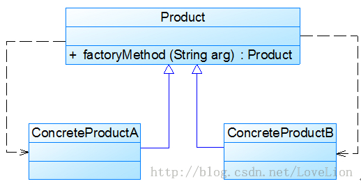

Sunny软件公司开发人员发现在创建具体Chart对象时，每更换一个Chart对象都需要修改客户端代码中静态工厂方法的参数，客户端代码将要重新编译，这对于客户端而言，违反了“开闭原则”，有没有一种方法能够在不修改客户端代码的前提下更换具体产品对象呢？答案是肯定的，下面将介绍一种常用的实现方式。
我们可以将静态工厂方法的参数存储在XML或properties格式的配置文件中，如下config.xml所示：
再通过一个工具类XMLUtil来读取配置文件中的字符串参数，XMLUtil类的代码如下所示：
- import javax.xml.parsers.*;
- import org.w3c.dom.*;
- import org.xml.sax.SAXException;
- import java.io.*;
- public class XMLUtil {
- //该方法用于从XML配置文件中提取图表类型，并返回类型名
- public static String getChartType() {
- try {
- //创建文档对象
- DocumentBuilderFactory dFactory = DocumentBuilderFactory.newInstance();
- DocumentBuilder builder = dFactory.newDocumentBuilder();
- Document doc;
- doc = builder.parse(new File("config.xml"));
- //获取包含图表类型的文本节点
- NodeList nl = doc.getElementsByTagName("chartType");
- Node classNode = nl.item(0).getFirstChild();
- String chartType = classNode.getNodeValue().trim();
- return chartType;
- }
- catch(Exception e) {
- e.printStackTrace();
- return null;
- }
- }
- }
在引入了配置文件和工具类XMLUtil之后，客户端代码修改如下：
- class Client {
- public static void main(String args[]) {
- Chart chart;
- String type = XMLUtil.getChartType(); //读取配置文件中的参数
- chart = ChartFactory.getChart(type); //创建产品对象
- chart.display();
- }
- }
不难发现，在上述客户端代码中不包含任何与具体图表对象相关的信息，如果需要更换具体图表对象，只需修改配置文件config.xml，无须修改任何源代码，符合“开闭原则”。
|

5 简单工厂模式的简化
有时候，为了简化简单工厂模式，我们可以将抽象产品类和工厂类合并，将静态工厂方法移至抽象产品类中，如图3所示：

图3 简化的简单工厂模式
在图3中，客户端可以通过产品父类的静态工厂方法，根据参数的不同创建不同类型的产品子类对象，这种做法在JDK等类库和框架中也广泛存在。
6 简单工厂模式总结
简单工厂模式提供了专门的工厂类用于创建对象，将对象的创建和对象的使用分离开，它作为一种最简单的工厂模式在软件开发中得到了较为广泛的应用。
1. 主要优点
简单工厂模式的主要优点如下：
(1) 工厂类包含必要的判断逻辑，可以决定在什么时候创建哪一个产品类的实例，客户端可以免除直接创建产品对象的职责，而仅仅“消费”产品，简单工厂模式实现了对象创建和使用的分离。
(2) 客户端无须知道所创建的具体产品类的类名，只需要知道具体产品类所对应的参数即可，对于一些复杂的类名，通过简单工厂模式可以在一定程度减少使用者的记忆量。
(3) 通过引入配置文件，可以在不修改任何客户端代码的情况下更换和增加新的具体产品类，在一定程度上提高了系统的灵活性。
2. 主要缺点
简单工厂模式的主要缺点如下：
(1) 由于工厂类集中了所有产品的创建逻辑，职责过重，一旦不能正常工作，整个系统都要受到影响。
(2) 使用简单工厂模式势必会增加系统中类的个数（引入了新的工厂类），增加了系统的复杂度和理解难度。
(3) 系统扩展困难，一旦添加新产品就不得不修改工厂逻辑，在产品类型较多时，有可能造成工厂逻辑过于复杂，不利于系统的扩展和维护。
(4) 简单工厂模式由于使用了静态工厂方法，造成工厂角色无法形成基于继承的等级结构。
3. 适用场景
在以下情况下可以考虑使用简单工厂模式：
(1) 工厂类负责创建的对象比较少，由于创建的对象较少，不会造成工厂方法中的业务逻辑太过复杂。